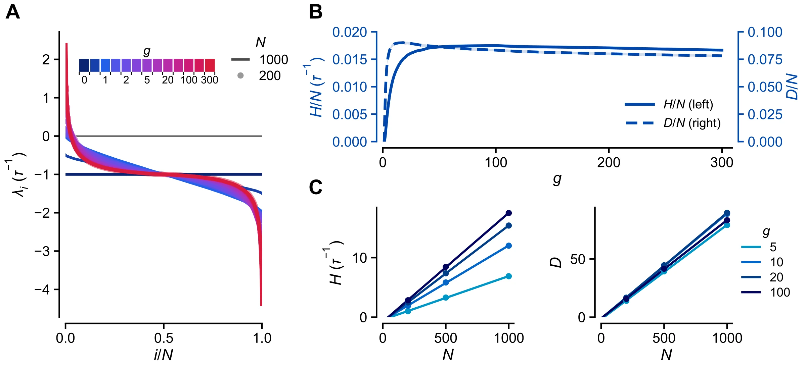

Lyapunov spectra of three recurrent network models
The units of a recurrent network drive one another. When the coupling is weak, activity dies away. When it is strong enough, the network keeps itself active with no input, and two almost identical starting states drift apart. That sensitivity to the starting state is chaos.
The classic example is the random network of Sompolinsky, Crisanti and Sommers (1988), dx/dt = −x + gW tanh(x), with Gaussian connection weights of variance 1/N. In large networks, activity decays to rest when the gain g is below 1 and becomes chaotic above it. Panel A of the figure on the About page shows one such network at three gains.
Reading a Lyapunov spectrum
A Lyapunov exponent is the average exponential rate at which a small perturbation grows or shrinks along one direction in state space. A network of N units has N of them, and sorted from largest to smallest they form its Lyapunov spectrum. I summarize a spectrum with three numbers:
- The largest exponent, λ1. If it is positive, the network is chaotic.
- The sum of the positive exponents, H, which estimates the entropy rate: how fast the dynamics produce new information.
- The Kaplan–Yorke dimension, D: how many exponents can be added, largest first, before the sum turns negative. It estimates the dimension of the set the activity settles onto.

How the exponents are computed
The method goes back to Benettin et al. (1980). Follow the network along its trajectory, and use its Jacobian to carry a set of small perturbation vectors along with it. Left alone, they would all swing toward the fastest-growing direction and grow or shrink without bound. So at regular intervals they are made perpendicular to one another again and rescaled to length one, and the logarithm of each length is recorded first. Averaged over time, those logarithms are the Lyapunov exponents. Making a set of vectors perpendicular, one after another, is a QR decomposition, which gives the method its name. My implementation follows Engelken et al. (2023).
Here is the same procedure with all 80 vectors at once, which gives the whole spectrum.
Chaos in the random network
Figure 4 shows how the spectrum of the random network changes with gain and network size. It is the baseline every other model is read against, and it reproduces the published results of Engelken et al. (2023).

Three ways to build the network
The project compares three models, each chaotic for a different structural reason. Panel B of the figure on the About page shows one network of each.
- Random. The classical network of Sompolinsky, Crisanti and Sommers (1988), used as the baseline.
- Dynamically critical. Random connectivity in which the 30% of eigenvalues with the largest real part are moved to a common real part just below one before the gain is applied, so a large group of modes reaches the stability boundary together.
- Barcode. The model of Fang et al. (2025): random connectivity with net inhibition, and a leak on every unit that grows with the network’s total activity.
Study design and validation
I own this project end to end, from experimental design to analysis. I built a Python/PyTorch simulation pipeline with SLURM job arrays covering 1,060 parameter combinations for the three models (up to N = 2,000), with 20 networks at each, generating about 22,000 runs over nearly 90,000 CPU core-hours.
I adapted and extended a published Lyapunov-spectrum solver (Engelken et al., 2023; QR/Benettin method, RK4 integration). I validated it against a reference implementation (Figure 4) and checked numerical convergence via paired comparisons of step size, reorthonormalization interval, duration, and precision.
Preliminary results
At matched maximum exponent λ1, the three networks can have different entropy and attractor dimension, and their spectra have clearly different shapes, so λ1 alone doesn’t tell the whole story. This is still being analyzed.

Other work
Dynamic mode decomposition (UC Davis)
Explored Dynamic Mode Decomposition on high-dimensional neural recordings, working with the neuroscientists who collected the data to understand its context.
Global sensitivity analysis (University of New Mexico, 2021–2022)
As a Ronald E. McNair Scholar and ASSURE Fellow, I applied variance-based Sobol’ global sensitivity analysis to attribute variability in Hodgkin–Huxley neuron model outputs to eight uncertain parameters and their interactions, across hundreds of thousands of simulations, and presented the findings at three national McNair research conferences.